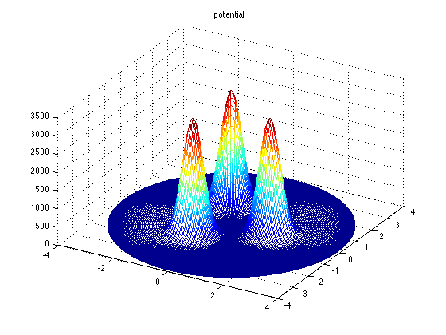
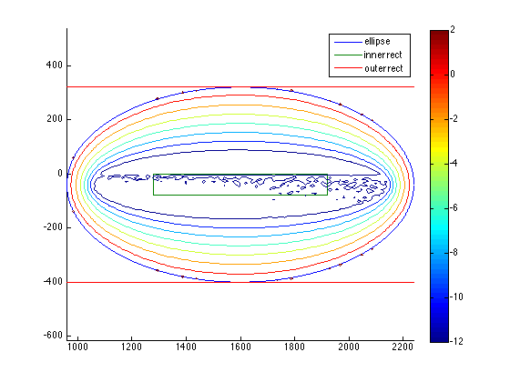
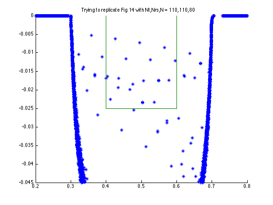
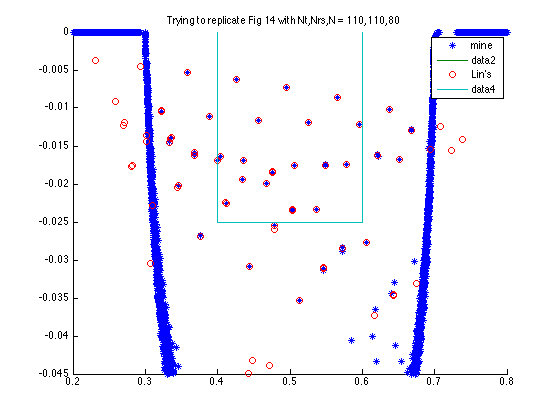

Contents
function demo_three_bumps
% This demo replicates the experiment in Kevin Lin's paper % "Numerical Study of Quantum Resonances in Chaotic Scattering" % using our methods instead of his. Our results agree. % We use dense methods in this demo--unfortunately this computation % ends up taking a long time. So, we show the steps but comment out the % eigenvalue computation--the eigenvalues are saved from a previous run, so % we read those from a file. % See demo_three_bumps_sparse.m for a sparse computation. The sparse % versions of the various objects are much faster to set up, but resonance % computation using them is infeasible at this time due to the lack of a % decent preconditioner. % % The user is recommended to read the "publish"-ed version in the html % folder rather than invoking this file directly. % WARNING: This demo is very slow to run. clear all close all addpath(fileparts(pwd));
Define the potential from the paper and discretize
Rcenters = 1.4;
sigma = 1/3;
hbar = 0.025;
laplaceCoeff = hbar^2/2;
c = Rcenters*exp(2i*pi*(1:3)/3);
G = @(x,y,cj) exp(-abs(x+1i*y-cj).^2/2/sigma^2);
V = @(x,y) (G(x,y,c(1)) + G(x,y,c(2)) + G(x,y,c(3)))/laplaceCoeff;
coords = 'rect';
Sanity check to see we got almost all volume.
cdist = 2.5;
R = Rcenters + cdist;
resid = V(R,0);
fprintf('Potential height at truncation radius = %f is %4.2e\n', R, resid);
Potential height at truncation radius = 3.900000 is 1.95e-09
Choose parameters for dtn problem and rational approximation.
Nt = 110; % mesh points in theta direction Nr = 110; % " " " r " N = 80; % poles in rational approximation
Create a problem using exact boundary condition based on DtN map.
dtn = DtNBC(Nt,Nr,{V},coords,R);
Check the potential looks right.
figure, u = dtn.plotFun(V,'potential',@real,coords);
 Pick a region to look at
From Lin's paper.
E0lin = 0.5; dElin = 0.1; ylin = -hbar; % from Lin's paper Fig 14 (top of rectangle is at zero)
innerRec_lin = rect(E0lin-dElin,E0lin+dElin, ylin, 0, [], []);
outerRec_lin = rect(0.2, 0.8, -0.045, 0, [], []);
Scaled for our basis (could also scale B instead).
E0 = E0lin/laplaceCoeff; dE = dElin/laplaceCoeff; y = ylin/laplaceCoeff; innerRec = rect(E0-dE,E0+dE,y,0,[],[]); % pick ellipse that contains it c = E0 + 1i*(innerRec.y1 + innerRec.y2)/2; b = (innerRec.y2 - innerRec.y1)/2 + dE; a = 2*dE; ell = ellipse(c,0,a,b,[],[]); % make a rectangle containing the ellipse buff = 1; x1 = real(ell.c) - ell.a - buff; x2 = real(ell.c) + ell.a + buff; y1 = imag(ell.c) - ell.b - buff; y2 = imag(ell.c) + ell.b + buff; outerRec = rect(x1,x2,y1,y2,100,100);
Define a rational approximation that is good on the ellipse ell.
rat = ratApproxDtNBC(dtn,ell,1,N);
Problem we want small residuals with respect to.
T = @(z) dtn.T( rat.mysqrt(z));
Show the region, show DtN map approx error, poles (if any).
figure, hold all ell.draw() innerRec.draw() outerRec.draw() rat.show_poles(outerRec) rat.show_error(outerRec) outerRec.focus(0); axis equal legend('ellipse','inner rect','outer rect');
Resonance computation
Get eigenvalues of rational approximation (some spurious). This is commented out because it took over a day on my Macbook (and used lots of virtual memory)--instead we read previously computed eigenvalues from a file.
% use this % e = eig(full(rat.Aschur)); % second version--unfortunately eigs() misses some eigs we want % opts.isreal = false; % e = eigs(rat.Aschur,400,ell.c,opts);
save or read the eigenvalues
dirname = 'three_bumps_output'; filename = sprintf('%s/eigs_%d_%d_%d.dat',dirname,Nt,Nr,N); if exist(filename, 'file') == 2 disp('Opening eigenvalues file') fid = fopen(filename,'r'); e = fscanf(fid, '%f %f', [2 Inf]).'; else disp('Starting eigenvalue computation from scratch') fid = fopen(filename,'w'); for j = 1:length(e) fprintf(fid,'%+8.6f %+8.6f\n', real(e(j)), imag(e(j))); end end fclose(fid); % %% % % Just take the ones inside the rectangle of interest. % e_in = e( innerRec.contains(e) ); % fprintf('There are %d eigs inside for Nt,Nr,N = %d,%d,%d\n', length(e_in),Nt,Nr,N);
Opening eigenvalues file
Plot after rescaling to usual physics units.
figure, hold all e = e*laplaceCoeff; % fclose(fid); plot(e(:,1),e(:,2),'*','displayname','mine'); % plot(e_in*laplaceCoeff,'*','displayname','mine'); innerRec_lin.draw() outerRec_lin.focus(); title(['Trying to replicate Fig 14 with Nt,Nrs,N = ' num2str(Nt) ',' num2str(Nr) ',' num2str(N)]);
Show the eigenvalues Lin computed in Fig 14. of his paper.
fid = fopen('three_bumps_output/lin.txt'); elin = fscanf(fid, '%f %f', [2 Inf]).'; fclose(fid); plot(elin(:,1),elin(:,2),'o', 'displayname','Lin''s'); innerRec_lin.draw(); outerRec_lin.focus(); legend show